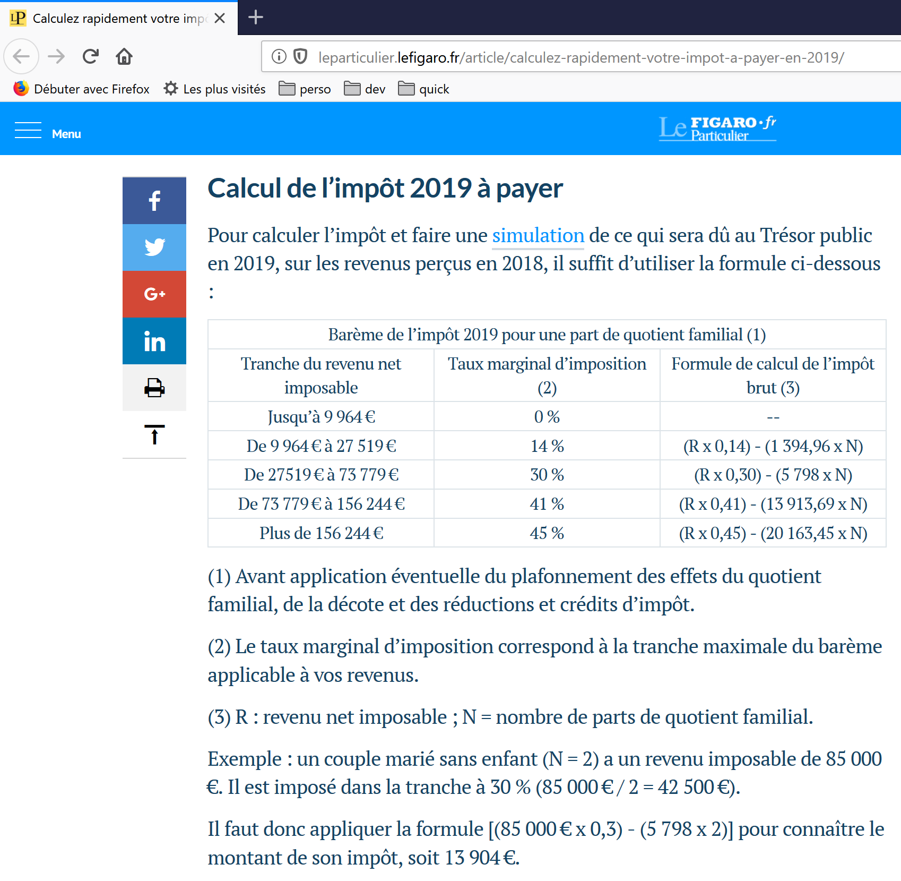
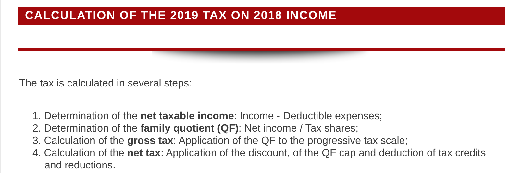
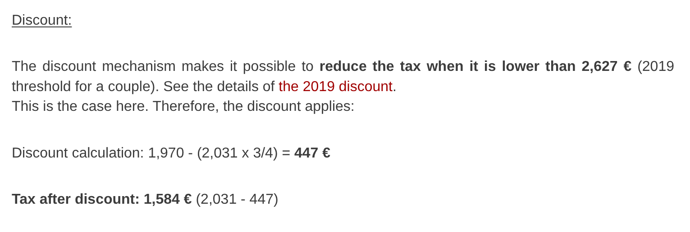

4. Ejercicio de aplicación – Versiones 1 y 2
4.1. El problema

La tabla anterior (una página francesa de lefigaro.fr) sirve para calcular el impuesto en el caso simplificado de un contribuyente que solo tiene su salario que declarar. Como indica la nota (1), el impuesto calculado de esta manera es el impuesto antes de tres ajustes:
- el tope del cociente familiar, que se aplica a los ingresos altos;
- el descuento y la reducción que se aplican a los contribuyentes de bajos ingresos.
Así, el cálculo del impuesto implica los siguientes pasos [http://impotsurlerevenu.org/comprendre-le-calcul-de-l-impot/1217-calcul-de-l-impot-2019.php]:

Proponemos escribir un programa para calcular el impuesto de un contribuyente en el caso simplificado de un contribuyente que solo tiene un único salario que declarar. Las reglas utilizadas son las del impuesto de 2019 sobre los ingresos de 2018. Servirán como hilo conductor a lo largo de este documento: el algoritmo seguirá siendo el mismo en las distintas versiones de la aplicación; solo cambiará su arquitectura.
4.1.1. Cálculo del impuesto bruto
El impuesto bruto se puede calcular de la siguiente manera.
Primero, se calcula el número de partes del contribuyente:
- cada progenitor aporta 1 parte;
- cada uno de los dos primeros hijos aporta 1/2 parte;
- cada hijo adicional aporta una parte.
Por lo tanto, el número de partes es:
- nbShares = 1 + nbChildren * 0.5 + (nbChildren - 2) * 0.5 si el empleado es soltero;
- nbShares = 2 + nbChildren * 0.5 + (nbChildren - 2) * 0.5 si es casado;
donde nbChildren es el número de hijos, y el término (número de hijos - 2) * 0.5 se aplica solo cuando hay tres o más hijos. A continuación:
- se calcula la renta imponible R como R = 0.9 * S, donde S es el salario anual;
- se calcula el cociente familiar QF = R / nbShares;
- calcule el impuesto bruto I a partir de los siguientes datos (2019):
field1 (umbral del QF) | field2 (coeffR) | field3 (coeffN) |
9964 | 0 | 0 |
27,519 | 0.14 | 1,394.96 |
73,779 | 0.3 | 5,798 |
156,244 | 0.41 | 13,913.69 |
0 | 0.45 | 20,163.45 |
Cada fila tiene 3 campos: field1, field2, field3. Para calcular el impuesto I, busque la primera fila en la que QF <= field1 y utilice los valores de esa fila. Por ejemplo, para un empleado casado con dos hijos y un salario anual S de 50,000 euros:
- renta imponible: R = 0.9 * S = 45,000;
- número de partes: nbShares = 2 + 2 * 0.5 = 3;
- cociente familiar: QF = 45,000 / 3 = 15,000.
La primera fila en la que QF <= field1 es la siguiente:
El impuesto I es entonces igual a 0.14*R – 1,394.96*nbShares=[0.14*45000-1394.96*3]=2,115. El impuesto se redondea hacia abajo al euro inferior.
Si la condición QF <= field1 se cumple desde la primera fila, el impuesto es cero.
Si QF es tal que la condición QF <= field1 nunca se cumple, se utilizan los coeficientes de la última fila. En este caso:
lo que da el impuesto bruto I = 0.45*R – 20,163.45*nbShares.
4.1.2. Tope del cociente familiar

Para determinar si se aplica el tope del cociente familiar QF, se vuelve a calcular el impuesto bruto sin contar a los hijos. De nuevo, para el empleado casado con dos hijos y un salario anual S de 50,000 euros:
- renta imponible: R = 0.9 * S = 45,000;
- número de partes: nbShares = 2 (ya no se cuenta a los hijos);
- cociente familiar: QF = 45,000 / 2 = 22,500.
La primera fila en la que QF <= field1 es la siguiente:
El impuesto I es entonces igual a 0.14*R – 1,394.96*nbShares=[0.14*45000-1394.96*2]=3,510.
- Ventaja máxima por hijos: 1,551 * 2 = 3,102 euros;
- impuesto mínimo: 3,510 – 3,102 = 408 euros.
El impuesto bruto con 3 partes, ya calculado en 2,115 euros, es superior al impuesto mínimo de 408 euros, por lo que aquí no se aplica el tope familiar.
En general, el impuesto bruto es max(tax1, tax2), donde:
- [tax1]: es el impuesto bruto calculado con hijos;
- [tax2]: es el impuesto bruto calculado sin hijos y reducido por la deducción máxima (aquí, 1,551 euros por media parte) relacionada con los hijos.
4.1.3. Cálculo del descuento

De nuevo, para el empleado casado con dos hijos y un salario anual S de 50,000 euros:
El impuesto bruto (2,115) del paso anterior es inferior a 2,627 euros para una pareja casada (1,595 euros para una persona soltera): por lo tanto, se aplica el descuento. Se calcula de la siguiente manera:
- descuento = umbral (pareja=1,970 / soltero=1,196) - 0.75 * impuesto bruto;
- descuento = 1,970 – 0.75 × 2,115 = 383.75, redondeado a 384 euros;
- nuevo impuesto bruto = 2,115 – 384 = 1,731 euros.
4.1.4. Cálculo de la reducción

Por debajo de cierto umbral, se aplica una reducción del 20% al impuesto bruto resultante de los cálculos anteriores. En 2019, los umbrales son los siguientes:
- soltero: 21,037 euros;
- pareja: 42,074 euros (la cifra de 37,968 utilizada en el ejemplo anterior parece ser incorrecta).
Este umbral se incrementa en el valor: 3,797 * (número de medias partes aportadas por los hijos).
De nuevo, para el empleado casado con dos hijos y un salario anual S de 50,000 euros:
- su renta imponible (45,000 euros) es inferior al umbral (42,074 + 2 × 3,797) = 49,668 euros;
- por lo tanto, tiene derecho a una reducción del 20% de su impuesto: 1,731 * 0.2 = 346.2 euros, redondeado a 347 euros;
- el impuesto bruto del contribuyente pasa a ser: 1,731 – 347 = 1,384 euros.
4.1.5. Cálculo del impuesto neto
Nuestro cálculo termina aquí: el impuesto neto a pagar será de 1,384 euros. En la realidad, el contribuyente puede tener derecho a otras deducciones, en particular por donaciones a organismos de interés público o general.
4.1.6. Contribuyentes de altos ingresos
Nuestro ejemplo anterior se aplica a la mayoría de los empleados. Sin embargo, el cálculo del impuesto es diferente para los contribuyentes de altos ingresos.
4.1.6.1. Tope de la deducción del 10% sobre los ingresos anuales
En la mayoría de los casos, la renta imponible se calcula con la fórmula: R = 0.9 × S, donde S es el salario anual. Esto se conoce como la deducción del 10%. Esta deducción tiene un tope. En 2019:
- no puede exceder 12,502 euros;
- no puede ser inferior a 437 euros.
Consideremos el caso de un empleado soltero sin hijos y con un salario anual de 200,000 euros:
- la deducción del 10% es de 200,000 euros > 12,502 euros. Por lo tanto, se limita a 12,502 euros.
4.1.6.2. Tope del cociente familiar
Consideremos un caso en el que se aplica el tope del cociente familiar descrito en la sección “Tope del cociente familiar” anterior: una pareja con tres hijos y unos ingresos anuales de 100,000 euros. Repasemos de nuevo los pasos del cálculo:
- la deducción del 10% es de 10,000 euros < 12,502 euros. Por lo tanto, la renta imponible R es 100,000 – 10,000 = 90,000 euros;
- la pareja tiene nbShares = 2 + 0.5 × 2 + 1 = 4 partes;
- su cociente familiar es, por lo tanto, QF = R / nbShares = 90,000 / 4 = 22,500 euros;
- su impuesto bruto I1 con hijos es I1 = 0.14 × 90,000 − 1,394.96 × 4 = 7,020 euros;
- su impuesto bruto I2 sin hijos:
- QF = 90,000 / 2 = 45,000 euros;
- I2 = 0.3 × 90,000 − 5,798 × 2 = 15,404 euros;
- La regla del tope del cociente familiar establece que la ventaja derivada de los hijos no puede exceder (1,551 × 4 medias partes) = 6,204 euros. Sin embargo, en este caso, I2-I1 = 15,404 – 7,020 = 8,384 euros, que es mayor que 6,204 euros;
- Por lo tanto, el impuesto bruto se recalcula como I3 = I2-6,204 = 15,404 - 6,204 = 9,200 euros.
Esta pareja no recibirá ni descuento ni reducción, y su impuesto final será de 9,200 euros.
4.1.7. Cifras oficiales
El cálculo del impuesto es complejo. A lo largo de este documento se utilizarán ejemplos para ilustrar el proceso. Los resultados oficiales son los del simulador de 2019 de la administración tributaria [https://www3.impots.gouv.fr/simulateur/calcul_impot/2019/simplifie/index.htm]:
Contribuyente | Resultados oficiales | Resultados del algoritmo del documento |
Pareja con 2 hijos e ingresos anuales de 55,555 euros | Impuesto = 2,815 euros Tasa impositiva = 14% | Impuesto = 2,814 euros Tasa impositiva = 14% |
Pareja con 2 hijos e ingresos anuales de 50,000 euros | Impuesto = 1,385 euros Descuento = 384 euros Reducción = 346 euros Tasa impositiva = 14% | Impuesto = 1,384 euros Descuento = 384 euros Reducción = 347 euros Tasa impositiva = 14% |
Pareja con 3 hijos e ingresos anuales de 50,000 euros | Impuesto = 0 euros Descuento = 720 euros Reducción = 0 euros Tasa impositiva = 14% | Impuesto = 0 euros Descuento = 720 euros Reducción = 0 euros Tasa impositiva = 14% |
Soltero con 2 hijos e ingresos anuales de 100,000 euros | Impuesto = 19,884 euros Descuento = 0 euros Reducción = 0 euros Tasa impositiva = 41% | Impuesto = 19,884 euros Recargo = 4,480 euros Descuento = 0 euros Reducción = 0 euros Tasa impositiva = 41% |
Soltero con 3 hijos e ingresos anuales de 100,000 euros | Impuesto = 16,782 euros Descuento = 0 euros Reducción = 0 euros Tasa impositiva = 41% | Impuesto = 16,782 euros Recargo = 7,176 euros Descuento = 0 euros Reducción = 0 euros Tasa impositiva = 41% |
Pareja con 3 hijos e ingresos anuales de 100,000 euros | Impuesto = 9,200 euros Descuento = 0 euros Reducción = 0 euros Tasa impositiva = 30% | Impuesto = 9,200 euros Recargo = 2,180 euros Descuento = 0 euros Reducción = 0 euros Tasa impositiva = 30% |
Pareja con 5 hijos e ingresos anuales de 100,000 euros | Impuesto = 4,230 euros Descuento = 0 euros Reducción = 0 euros Tasa impositiva = 14% | Impuesto = 4,230 euros Descuento = 0 euros Reducción = 0 euros Tasa impositiva = 14% |
Soltero, sin hijos, con ingresos anuales de 100,000 euros | Impuesto = 22,986 euros Descuento = 0 euros Reducción = 0 euros Tasa impositiva = 41% | Impuesto = 22,986 euros Recargo = 0 euros Descuento = 0 euros Reducción = 0 euros Tasa impositiva = 41% |
Pareja con 2 hijos e ingresos anuales de 30,000 euros | Impuesto = 0 euros Descuento = 0 euros Reducción = 0 euros Tasa impositiva = 0% | Impuesto = 0 euros Descuento = 0 euros Reducción = 0 euros Tasa impositiva = 0% |
Soltero, sin hijos, con ingresos anuales de 200,000 euros | Impuesto = 64,211 euros Descuento = 0 euros Reducción = 0 euros Tasa impositiva = 45% | Impuesto = 64,210 euros Recargo = 7,498 euros Descuento = 0 euros Reducción = 0 euros Tasa impositiva = 45% |
Pareja con 3 hijos e ingresos anuales de 200,000 euros | Impuesto = 42,843 euros Descuento = 0 euros Reducción = 0 euros Tasa impositiva = 41% | Impuesto = 42,842 euros Recargo = 17,283 euros Descuento = 0 euros Reducción = 0 euros Tasa impositiva = 41% |
En el ejemplo anterior, el “recargo” se refiere al monto adicional que pagan los contribuyentes de altos ingresos debido a dos factores:
- el tope de la deducción del 10% sobre los ingresos anuales;
- el tope del cociente familiar.
Este indicador no se pudo verificar porque el simulador de la administración tributaria no lo proporciona.
Se observa que el algoritmo del documento calcula siempre el monto correcto del impuesto, aunque con un margen de error de 1 euro. Este margen de error se debe al redondeo. Todos los montos monetarios se redondean: a veces hacia el euro siguiente y a veces hacia abajo al euro inferior. Como el autor desconoce las reglas oficiales de redondeo, los montos monetarios del algoritmo del documento se han redondeado:
- hacia arriba al euro siguiente en el caso de los descuentos y las reducciones;
- hacia abajo al euro inferior en el caso de los recargos y el impuesto final.
En la siguiente sección se realizarán pruebas para verificar la validez de los resultados. Estas pruebas se efectuarán con los ejemplos de la tabla anterior, con un margen de error aceptado de 1 euro.
4.2. Estructura de directorios de los scripts
Las dos primeras versiones de la aplicación están en la carpeta [scripts-console/tax]:
A modo de referencia, el archivo [verified-results.txt] contiene los resultados obtenidos con el simulador oficial para los contribuyentes del archivo [taxpayersdata.txt].
4.3. Versión 1
4.3.1. El algoritmo
Presentamos un primer programa en el que:
- los datos necesarios para calcular el impuesto están codificados directamente en el programa como arreglos y constantes;
- los datos de los contribuyentes (estado civil, hijos, salario) se almacenan en un primer archivo de texto, [taxpayersdata.txt];
- los resultados del cálculo del impuesto (estado civil, hijos, salario, impuesto, etc.) se almacenan en un segundo archivo de texto, [results.txt].
El archivo de datos [taxpayersdata.txt] (casado, hijos, salario) es el siguiente:
El programa principal del script [version-01/main.php] es el siguiente:
Comentarios:
- línea 4: se exige el respeto estricto de los tipos de los parámetros y de los valores de retorno de las funciones;
- líneas 7–16: definición de todas las constantes necesarias para calcular el impuesto. La palabra clave [const] define una constante global accesible en todo el script, incluso dentro de las funciones. El curso de PHP 7 utilizaba la función [define("HALF_SHARE_QF_CEILING", 1551)], que hace lo mismo y todavía existe. [const] es más legible y permite que el editor verifique los nombres de las constantes. Por convención, los nombres de las constantes van en mayúsculas;
- línea 19: el nombre del archivo de texto que contiene los datos de los contribuyentes (estado civil, hijos, salario);
- línea 20: el nombre del archivo de texto que contiene los resultados del cálculo del impuesto;
- líneas 21–23: las tres tablas de datos que definen los distintos tramos impositivos utilizados en el cálculo del impuesto. Son las tres columnas de la tabla de la sección “Cálculo del impuesto bruto”;
- líneas 26–30: se abre el archivo de datos de los contribuyentes para lectura con [r]. La función [is_readable] verifica primero si el archivo existe y se puede leer: de lo contrario, [$data] se establece en [false]. Esto evita la advertencia que [fopen] emitiría si faltara el archivo. La función [fopen] también devuelve el valor [false] si no se pudo abrir el archivo;
- líneas 33–37: se abre el archivo de resultados para escritura con [w];
- líneas 40–54: bucle para leer las líneas (casado, hijos, salario) del archivo de datos de los contribuyentes;
- línea 40: la función [fgets] lee hasta 100 caracteres y se detiene en el primer marcador de fin de línea que encuentra. Aquí, todas las líneas tienen menos de 100 caracteres. Si se encuentra un carácter de fin de línea, se incluye en la cadena devuelta. Cuando se llega al final del archivo, la función [fgets] devuelve el valor [false];
- línea 42: se elimina el carácter de fin de línea. El archivo [taxpayersdata.txt] se creó en Windows: sus líneas terminan con los dos caracteres \r\n;
- línea 44: se recuperan los componentes (casado, hijos, salario) de la línea. Son tres cadenas de caracteres;
- líneas 45–47: el estado civil se convierte a minúsculas, y el número de hijos y el salario se convierten en enteros. Estas conversiones explícitas son necesarias: en modo estricto, la función [calculateTax] no aceptaría la cadena "2" para su parámetro [int $children];
- línea 49: se calcula el impuesto. El resultado se devuelve como un arreglo asociativo. Observe que el salario, un [int], se pasa al [float $salary] parámetro de la función [calculateTax]: esta es la única conversión permitida en modo estricto;
- línea 51: las claves [married, children, salary] se agregan al principio del arreglo recuperado anteriormente. El operador + aplicado a dos arreglos asociativos devuelve un arreglo que contiene los elementos de ambos arreglos;
- línea 52: el resultado se almacena en el archivo de resultados como una cadena JSON, con una línea por contribuyente;
- líneas 56–57: una vez procesado por completo el archivo de datos de los contribuyentes, se cierran los archivos;
- línea 64: la función que elimina el carácter de fin de línea de una línea de la cadena [$line]. El carácter de fin de línea es la cadena "\r\n" en los sistemas Windows y "\n" en los sistemas Unix. El resultado es la cadena de entrada sin su carácter de fin de línea.
La función [calculateTax] es la siguiente:
Comentarios:
- línea 81: se calcula el impuesto bruto incluyendo a los dependientes. El resultado tiene la forma [["tax" => $tax, "surcharge" => $surcharge, "rate" => $coeffR[$i]]], donde:
- [tax]: el impuesto bruto;
- [surcharge]: el monto del recargo, si lo hay. Se aplica cuando la deducción del 10% supera el umbral de 12,502 euros;
- [rate]: la tasa impositiva del contribuyente;
- línea 82: el impuesto bruto [$tax1] adeudado;
- líneas 84–85: si el contribuyente tiene al menos un hijo, se vuelve a realizar el cálculo del impuesto con los mismos datos pero suponiendo 0 hijos. Este segundo cálculo es necesario para determinar si la reducción del impuesto derivada de tener hijos supera cierto umbral;
- línea 86: el impuesto bruto [$tax2] adeudado;
- líneas 88–94: para el impuesto bruto [$tax2], ahora se tienen en cuenta los hijos: cada media parte aportada por los hijos da lugar a una reducción de [HALF_SHARE_QF_CEILING] euros. Los dos primeros hijos aportan una media parte cada uno; los hijos siguientes aportan una parte completa, es decir, dos medias partes;
- líneas 96–97: caso en que el contribuyente no tiene hijos. En este caso, calcular [$tax2] es innecesario. Es igual a [$tax1];
- líneas 100–108: se han calculado dos montos de impuesto bruto: [tax1, tax2]. La administración tributaria conserva el mayor de los dos. Esto da un impuesto bruto de [$tax];
- líneas 110–111: el monto bruto [$tax] puede estar sujeto a un descuento;
- líneas 113–114: el monto bruto [$tax] puede estar sujeto a una reducción;
- líneas 116–122: [$tax] es ahora el impuesto neto a pagar. Se devuelven los resultados. Los cálculos se realizaron con números reales ([float]): las funciones [floor] (redondeo hacia abajo al entero inferior) y [ceil] (redondeo hacia arriba al entero superior) también devuelven números reales. Convertimos los montos en enteros mediante [(int)] para que aparezcan sin parte decimal. La tasa sigue siendo un número real.
La función [calculateTax2] es la siguiente:
Comentarios:
- Aquí, el impuesto se calcula mediante la llamada escala de impuesto progresivo;
- líneas 134–142: cálculo del número de partes del contribuyente;
- línea 145: la renta imponible se calcula mediante una función. Como hemos visto, no siempre es 0.9*annualSalary. La deducción del 10% tiene, en efecto, un tope de 12,502 euros;
- línea 147: cálculo del recargo, si lo hay, cuando la renta imponible supera 0.9*annualSalary;
- líneas 149–151: corrige el hecho de que, debido a errores de redondeo, el resultado a veces es [$surcharge=-1];
- línea 153: el cociente familiar;
- líneas 155–160: este cociente se utiliza para determinar el tramo impositivo del contribuyente. Se busca el primer elemento de [$limits] que sea mayor o igual que el cociente. El cociente se almacenó en el último elemento de [$limits] (que valía 0): el bucle [while] se detiene, por lo tanto, a más tardar en este último elemento. Como el arreglo [$limits] se pasó por valor, esta modificación afecta solo a la copia local de la función;
- línea 164: una vez determinado el tramo impositivo del contribuyente, se puede calcular su impuesto bruto. La función [floor($x)] devuelve el valor entero inmediatamente inferior a [$x];
- línea 166: se devuelve la información calculada.
La función [getTaxableIncome] es la siguiente:
Comentarios:
- línea 174: la deducción estándar es el 10% del salario anual;
- líneas 176–178: la deducción no puede exceder la deducción máxima [TEN_PERCENT_ALLOWANCE_MAX];
- líneas 180–182: la deducción no puede ser inferior a la deducción mínima [TEN_PERCENT_ALLOWANCE_MIN];
- líneas 184–186: cálculo de la renta imponible, redondeada hacia abajo al euro inferior con la función [floor].
La función [getDiscount] es la siguiente:
Comentarios:
- línea 195: monto máximo de impuesto bruto para tener derecho a un descuento. Este monto es diferente para los contribuyentes solteros y para las parejas;
- línea 196: si el contribuyente tiene derecho al descuento;
- línea 200: la fórmula del descuento. [$discountCeiling] es el monto máximo del descuento. Este monto máximo se calcula en la línea 198. De nuevo, depende de la situación del contribuyente: casado o soltero;
- líneas 202–204: el descuento no puede exceder el impuesto bruto adeudado. Es el caso, por ejemplo, si [$taxes] es igual a 0;
- líneas 206–208: para evitar un descuento negativo;
- línea 211: el descuento se redondea hacia arriba al euro siguiente.
La función [getReduction] es la siguiente:
Comentarios:
- líneas 218–222: para tener derecho a una reducción del impuesto, la renta imponible (línea 224) debe ser inferior a un umbral que se calcula aquí. Este umbral aumenta en [HALF_SHARE_REDUCTION_VALUE] por cada media parte aportada por los hijos;
- líneas 227–230: si el contribuyente cumple las condiciones, tiene derecho a una reducción del 20% del impuesto (línea 229);
- línea 232: la reducción se redondea hacia arriba al euro siguiente.
4.3.2. Resultados
Ejecute el script en un terminal abierto en la carpeta [version-01]:
El archivo [results.txt] (casado, hijos, salario, impuesto, recargo, descuento, reducción, tasa impositiva) que contiene los resultados es el siguiente:
Los impuestos calculados (2814, 1384, 0, 19884, 16782, 9200, 4230, 22,986, 0, 64,210, 42,842) son los de la columna “Resultados del algoritmo del documento” de la tabla de cifras oficiales: coinciden, con una diferencia de 1 euro como máximo, con los obtenidos con el simulador de la administración tributaria. Observe que en la ejecución con PHP 7, los valores de [children] y [salary] eran cadenas (“2”, “55555”): la versión de PHP 8 las convirtió en enteros antes del cálculo, y el archivo JSON las guarda como números.
4.3.3. Conclusión
El algoritmo para calcular impuestos, incluso en los casos considerados simples, es complejo. No volveremos sobre él aquí. A lo largo de las distintas versiones, su núcleo seguirá siendo el mismo a pesar de algunos cambios de presentación. Por lo tanto, comentaremos solo esos cambios.
4.4. Versión 2
4.4.1. Cambios
En la versión anterior, los datos necesarios para calcular el impuesto estaban codificados directamente como constantes y arreglos. Este método debe evitarse. En la nueva versión, estos datos se externalizan en el archivo JSON [taxadmindata.json] ubicado junto al script:
El contenido del archivo [taxadmindata.json] es el siguiente:
Contiene las tres tablas [limits, coeffR, coeffN] y las constantes de la versión 1, con los mismos nombres.
La nueva versión, [version-02/main.php], es la siguiente (las funciones que no se muestran tienen el mismo código que en la versión 1, salvo por el parámetro [$taxAdminData]):
1 2 3 4 5 6 7 8 9 10 11 12 13 14 15 16 17 18 19 20 21 22 23 24 25 26 27 28 29 30 31 32 33 34 35 36 37 38 39 40 41 42 43 44 45 46 47 48 49 50 51 52 53 54 55 56 57 58 59 60 61 62 63 64 65 66 67 68 69 70 71 72 73 74 75 76 77 78 79 80 81 82 83 84 85 86 87 88 89 90 91 92 93 94 95 96 97 98 99 100 101 102 103 104 105 106 107 108 109 110 111 112 113 114 115 116 117 118 119 120 121 122 123 124 125 126 127 128 129 130 131 132 133 134 135 136 137 138 139 140 141 | |
Comentarios:
- línea 9: el nombre del archivo JSON que contiene los datos de la administración tributaria;
- líneas 12–20: se intenta leer el contenido del archivo JSON llamado [$TAXADMINDATA]. La función [file_get_contents] devuelve todo el contenido de un archivo como una cadena, y [false] si la operación falla;
- líneas 22–32: si el archivo se leyó correctamente, se utiliza la función [json_validate] (PHP 8.3) para verificar que contiene datos JSON válidos y luego su contenido se decodifica en el arreglo asociativo [$taxAdminData];
- líneas 35–39: si se produjo un error en alguna de las dos operaciones anteriores, se escribe un mensaje de error en la consola y el programa termina;
- línea 67: la diferencia con la versión 1 es que aquí los datos (arreglos y constantes) de la administración tributaria se almacenan en el arreglo asociativo [$taxAdminData], mientras que en la versión 1 se almacenaban en arreglos y constantes globales. El carácter global de estas constantes es lo que distingue a las dos versiones:
- en la versión 1, las constantes eran accesibles en todas las funciones de [main.php];
- para lograr el mismo resultado en la versión 2, se debe pasar el arreglo asociativo [$taxAdminData] como parámetro a todas las funciones que lo necesitan: [calculateTax], [calculateTax2], [getTaxableIncome], [getDiscount] y [getReduction];
- línea 91: la función [calculateTax] recibe el arreglo [$taxAdminData] como primer parámetro. Los arreglos [limits, coeffR, coeffN] ya no son parámetros; están contenidos en [$taxAdminData];
- líneas 108–111: donde antes se utilizaban constantes globales, ahora se utiliza el contenido del arreglo [$taxAdminData], recibido como parámetro.
La función [calculateTax2] recupera los tramos impositivos del arreglo [$taxAdminData] de la misma manera:
- líneas 173–175: las tres tablas de tramos impositivos se recuperan del diccionario [$taxAdminData]. El resto del código no cambia.
Las demás funciones se reescriben de la misma manera. Por ejemplo, la función [getDiscount]:
La ejecución produce la siguiente salida:
y el siguiente archivo [results.txt]:
Los resultados obtenidos son los mismos que los de la versión anterior.
4.4.2. Conclusión
La versión 2 es mucho más flexible que la versión 1. Si, en otro año, el algoritmo de cálculo del impuesto sigue siendo el mismo, solo cambian los tramos impositivos y las constantes de cálculo. Basta con actualizar el archivo [taxadmindata.json]. Con la versión 1, hay que entrar en el código para modificar los tramos impositivos y las constantes de cálculo. Sin embargo, es probable que las personas que deben cambiar los valores de los tramos impositivos y de las constantes de cálculo no tengan acceso al código del algoritmo.
Sin embargo, la versión 2 tiene un defecto: el arreglo [$taxAdminData] debe pasarse a todas las funciones, y no hay garantía de que contenga realmente todas las claves esperadas. Un error tipográfico en una clave del archivo JSON no se detectaría hasta que se realice el cálculo. La versión 3 almacenará estos datos en un objeto de la clase [TaxAdminData], cuyas propiedades están declaradas y tipadas.